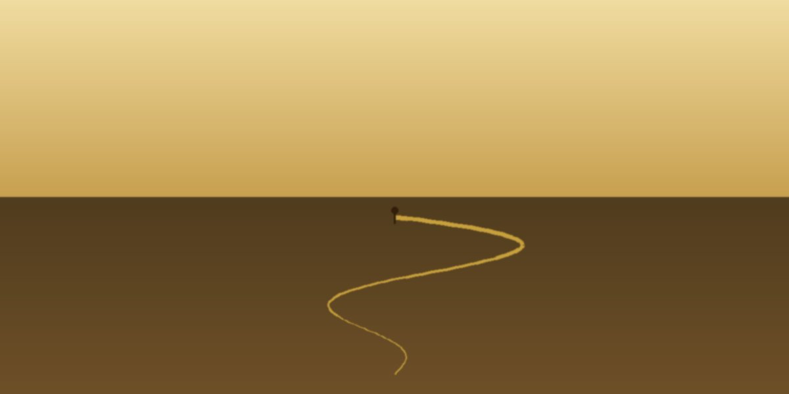

I think I'm in the part of my life where I'm making things—not performing them.
That feels important to say out loud.
Especially when I sing. I still do it. And honestly, it's good. The ad-libs come easy now. Not because I'm trying to be clever, but because I've already sung everything. Every scale. Every combination. It's all in there. So now it's just recall—like pulling a line from an old favorite book instead of rehearsing the newest affirmation.
It's the same with building a company.
I'm not reaching for something external anymore. I'm making something that didn't exist like this before. Not optimized for applause. Not shaped to impress. Just… true. Built to hold.
And I keep thinking—what could be more purposeful than that?
Creating.
Not in the "content" sense. In the quiet sense. The kind where something comes into being because you were paying attention. Because you trusted what was already in your hands and had the discipline to shape it into something real.
That kind of creation feels hallowed to me. Not loud. Not urgent. Grounded.
It's the place where I don't feel split. Where I'm not explaining myself or auditioning or trying to land right. I'm just building. And the thing exists now. Structured. Purposeful. Different than before. That feels worthy enough.
I'm not doing this to perform anymore. And maybe that's why it finally feels honest. No stage. No vanity metric. No need to prove usefulness to anyone but the mission.
Just the work of shaping something that serves.
If I'm clearest anywhere, it's there.
I stayed.